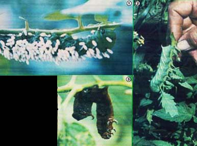

Mary Appelhol offers some good advice to tomato growers:
Many wholistic gardeners will-upon encountering a pest that's obviously in the process of dining on a "crop" plant-promptly pick the critter off and drown, "gish", or otherwise permanently dispose of it.
Most often, of course, such militant garden protection is the best policy. However, should you happen to espy a tomato hornworm that is covered with the white cocoons of the braconid wasp (like the crawler shown in Photo 1... as opposed to the healthy-and hungry-specimen in Photo 2), your best course of action is to leave the worm alone. It will soon die and dehydrate as a result of its parasites (as did the tomato-eater shown in Photo 3), and the wasp larvae will mature to lay more eggs on more of the pests that threaten to rob you of your hard-earned harvest!
|
 |
|
|